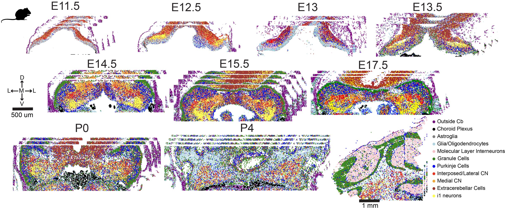
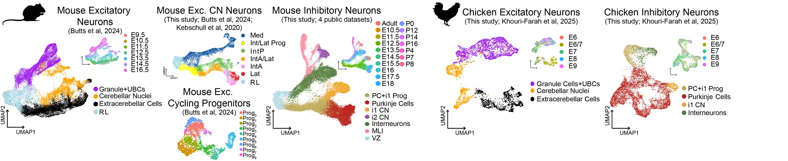

Explore spatial transcriptomics data
View cell types and gene expression in coronal sections of the developing mouse cerebellum.
Explore BARseq3 datasets

Explore scRNA-seq data
View cell types and gene expression across transcriptomic embeddings of the developing cerebellum.
Open single-cell explorer
Spatial Transcriptomics
BARseq3 datasets
Developmental cerebellar sections profiled using BARseq3 spatial transcriptomics (Qi*, Anant*, Faltine-Gonzalez* et al, biorxiv, 2026)
Choose a timepoint to load it in the interactive explorer. Postnatal datasets marked “queued” will be added later.
Interactive spatial atlas
Explore the BARseq3 atlas
Loaded datasetLoading dataset
- Cells
- --
- Genes
- --
- Libraries
- --
- Visible
- --
Local AnnData browser
Spatial map
Gene catalog
Select a row to plot expression. Use the search above to filter genes.
| Gene | Cells | Mean | Dropout |
|---|
scRNA-seq
Explore scRNA-seq datasets
Integrated single-cell and single-nuclei RNA-seq embeddings of the developing cerebellum from Anant et al. (2026).
Select a dataset card, choose an annotation, or search for any gene to visualize its expression on the UMAP.
Loading scRNA-seq datasets
--